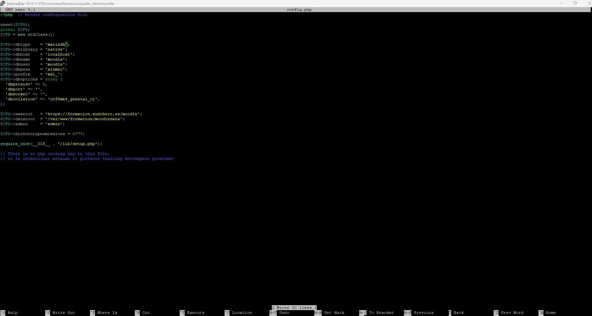

Instalación y configuración de WordPress y PhpMyAdmin
WordPress es un gestor de contenido que nos proporciona un entorno para administrar y crear una página web a través de su interfaz gráfica.
Para ello, necesita que en el sistema haya un lenguaje de lado servidor (PHP) y una base de datos (MariaDB).
Lo primero que vamos a hacer es descargar e instalar nuestro gestor de bases de datos.
Una vez dentro de MariaDB creamos la base de datos.
Y creamos nuestro usuario con todos los permisos.
Ya tenemos nuestra base de datos lista. Debemos tener en cuenta que por ahora está vacía. Cuando instalemos WordPress desde la interfaz gráfica se crearán automáticamente las tablas necesarias.
Nos vamos a mover al directorio /var/www/html y allí descargamos WordPress. En nuestro caso bajamos la última versión.

Si listamos el contenido del directorio veremos que ahora tenemos WordPress comprimido. Lo descomprimimos.
En la carpeta WordPress viene un fichero de configuración de ejemplo que vamos a usar de plantilla. Lo copiamos a otro fichero que se llamará wp-config.php.
Abrimos el fichero de configuración y modificamos las directivas señaladas en rojo con los datos correspondientes.
Como ves, lo único que hemos hecho ha sido darle a WordPress la información de nuestra base de datos.
Ahora vamos a hacer que WordPress y todo su contenido sea del usuario y grupo de apache y darle los permisos adecuados a todo el contenido de la carpeta WordPress.
Hasta ahora solo hemos configurado la base de datos, y configurado WordPress para que la use.
Ahora necesitamos configurar el virtual host en el que estará WordPress sirviendo su contenido.
Este es el fichero de configuración del virtual host de apache que servirá el WordPress.
Por ahora debemos ignorar el contenido de los directorios del webmail pues esas configuraciones se explican en la documentación del servicio de correo.

Ahora debemos crear un enlace simbólico del virtual host de informática hacia WordPress.
Si todo está bien configurado, podemos abrir un navegador web en una máquina que tenga comunicación con la máquina en la que hemos hecho las configuraciones. Nosotros lo hemos hecho con Windows. En cualquier caso, necesitamos de alguna manera poder resolver la URL que hemos puesto como en la directiva ServerName del fichero de configuración del virtual host. En Windows, se hace en el fichero hosts.
Como se ve en la imagen, añadimos una línea en la que indicamos que la IP de nuestra máquina corresponde al nombre informatica-wp.sudohero.es

Ahora ya podemos abrir un navegador y comprobarlo.
Lo único que queda es completar la instalación desde el propio navegador, proporcionando los datos que nos pida.
Al acabar veremos que tenemos disponible el panel de administración a partir del cual podemos trabajar en la web.
Esta es la página de ejemplo.

De momento tan solo tenemos acceso a WordPress, ahora vamos a implementar una manera más cómoda de administrar nuestra base de datos.
PhpMyAdmin es una herramienta gráfica que nos permite a través de un navegador web administrar nuestra base de datos.
Instalamos PhpMyAdmin.
Como vamos a querer acceder a través del mismo Windows con el que accedemos a WordPress, nos vamos al fichero de configuración y cambiamos las directivas "require local" por "require all granted".
Ahora, si intentamos acceder nos pedirá las credenciales, es decir, el usuario y contraseña que habíamos configurado la primera vez que accedimos a MariaDB.
Una vez autenticados, el panel de administración es accesible y vemos que a la izquierda aparece la base de datos del WordPress.

Instalación Moodle
Primero he instalado moodle en la carpeta de formación. Pero por un error tonto, creé la carpeta sudohero.es y lo instalé allí. Así que moví todo a formación para que no hubiese fallos por reduplicación o sintaxis errónea.
Creo el fichero de configuración para poder acceder a moodle a través de la url https://formacion.sudohero.es/moodle/install.php
Una vez hemos configurado nuestra máquina fedora, introducimos la url en el navegador y comenzamos la instalación.
Para poder completar la instalación tendremos que cambiar el max-imput vars, instalar soap y crear el archivo config.php.

Una vez que moodle nos dice que hemos cumplido con todos los requisitos, nos llevará a la configuración de nuestro moodle donde tendremos que añadir el usuario gestor, por defecto es admin. Nosotros lo vamos a cambiar para que sea más fácil de recordar ya que está dentro de la red privada de la empresa y es una práctica por lo que no va a haber problemas de seguridad.
Una vez hemos añadido, aparecemos en la página principal. Nos vamos a cursos y añadimos los cursos que va a tener nuestro moodle:
Tenemos esos cursos ya que en nuestra página de formación tenemos estos: